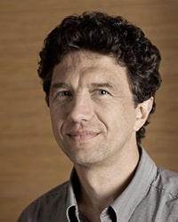
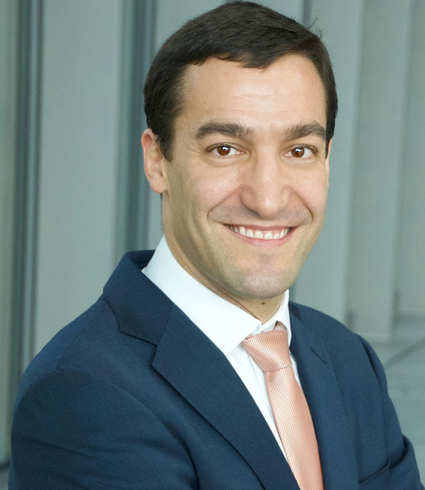
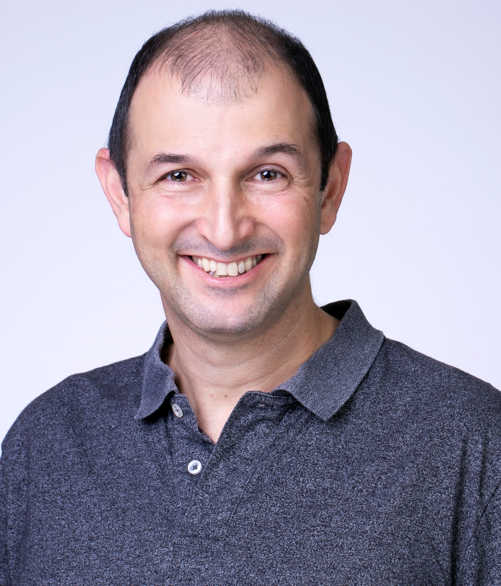

ISVLSI’20 – Confirmed Keynote Speakers
Evgeni Gousev
Senior Director of Engineering in Qualcomm Research

Evgeni Gousev is a Senior Director of Engineering in Qualcomm Research. He leads HW R&D org in the Silicon Valley Center and is also responsible for developing ultra low power embedded computing platform, including always on machine vision AI technology. He has been with Qualcomm Technologies, Inc. since 2005 after joining from IBM T.J. Watson Research Center where he drove projects in the field of advanced silicon technologies.
From 1993 to 1998, Dr. Gousev held academic professorship appointments with Rutgers University and Hiroshima University (1997). Evgeni holds a M.S. degree in Applied Physics and a Ph.D. in Solid-State Physics. He has co-edited 24 books and published 163 papers and is an inventor on more than 60 issued and filed patents.
Morning Keynote 2: Tuesday, 07/07/2020
Design of Edge AI Wearables for a Personalized and Sustainable Healthcare
David Atienza

Embedded Systems Lab. (ESL), EPFL, Switzerland
Abstract
Wearable devices are poised as the next frontier of innovation in the context of Internet-of-Things (IoT) to be able to provide personalized healthcare by interacting also with our everyday objects, which can be interconnected in ways that improve our lives and transform the medical industry. This new family of smart wearable devices provide a great opportunity for the integration of the next-generation of artificial intelligence (AI) based technologies in medical devices. However, major key challenges remain in achieving this potential due to inherent resource-constrained nature of wearable systems, coupled with their (in principle) limited computing power and data gathering requirements for Big Data medical applications, which can result in degraded and unreliable behavior and short lifetime. In this talk, Prof. Atienza will first discuss the challenges of ultra-low power (ULP) design and communication in smart wearable devices for medical applications in the context of Big Data healthcare. Then, the opportunities for edge computing and edge AI in next-generation smart wearables will be highlighted as a scalable way to fully deliver the concept of personalized medicine. This new trend of smarter wearable architectures will need to combine new ULP multi-core embedded systems with neural network accelerators, as well as including energy-scalable software layers to monitor medical pathologies by event-driven monitoring. Overall, the next-generation of smart wearable devices in the healthcare context will be able to gracefully adapt the energy consumption and precision of the pathology detection outputs according to the requirements of our surrounding world and available energy at each moment in time, as living organisms do to operate efficiently in the real world.
Short Bio
David Atienza is Associate Professor of Electrical and Computer Engineering and leads the Embedded Systems Laboratory (ESL) at EPFL, Switzerland. He received his MSc and PhD degrees in Computer Science and Engineering from UCM (Spain) and IMEC (Belgium). His research interests focus on system-level design methodologies for energy-efficient computing systems, particularly multi-processor system-on-chip architectures (MPSoC) for servers and next-generation smart embedded systems for the Internet of Things (IoT) era. In these fields, he is co-author of more than 300 publications, 12 patents, and has received several best paper awards in top conferences. He was the Technical Program Chair of DATE 2015 and General Chair of DATE 2017. Dr. Atienza has received the DAC Under-40 Innovators Award in 2018, IEEE TCCPS Mid-Career Award in 2018, an ERC Consolidator Grant in 2016, the IEEE CEDA Early Career Award in 2013, the ACM SIGDA Outstanding New Faculty Award in 2012, and a Faculty Award from Sun Labs at Oracle in 2011. He is an IEEE Fellow, an ACM Distinguished Member, and was the President (period 2018-2019) of IEEE CEDA.
Morning Keynote 3: Wednesday, 08/07/2020
Secure and Reliable AI
Aviv Barkai

Intel
Abstract
Artificial Intelligence (AI) opens many new opportunities for solving real challenges and improves everyone’s lives. It also opens the door to new security risks and new reliability or safety hazards. In this talk I will discuss security and reliability in AI and how this old-new world creates new and exciting challenges. Some of the challenges of Autonomous Vehicle (AV) safety and security will be discussed.
Short Bio
Aviv Barkai has been with Intel for the last 17 years, in various positions with multiple interest topics. His interests in the last several years include functional safety, reliability, security and debugability. He is currently an architect working on Neural Network Processor - Inference, responsible for these aspects as well as debug capabilities.
Aviv Barkai received his B.Sc. in Electrical Engineering and M.E.E. from the Technion, Israel Institute of Technology.He is a member of ISO 26262.
Aviv's current technical passions include teaching functional safety and performing threat analysis of HW IPs and SoC..
In his free time Aviv likes to play sophisticated box games with his family and hike around the world.